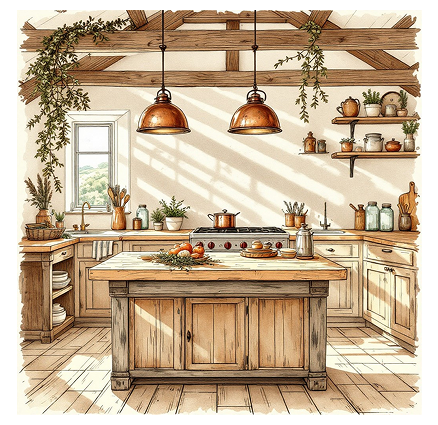
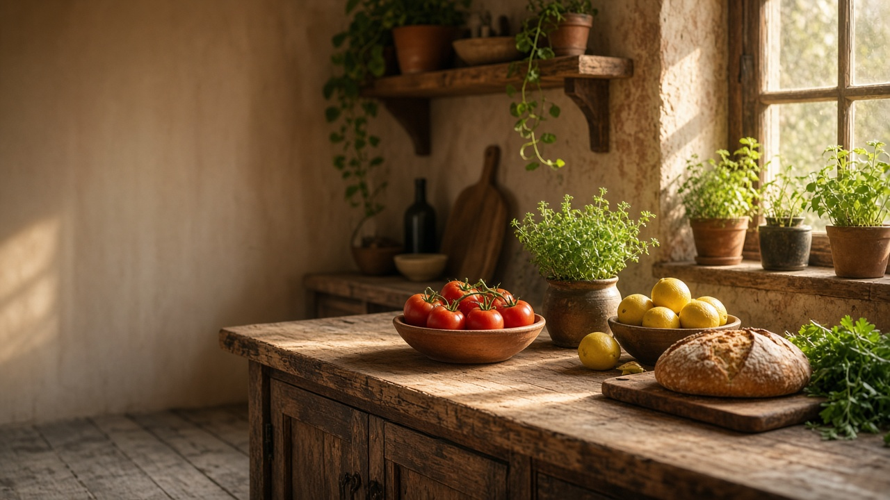
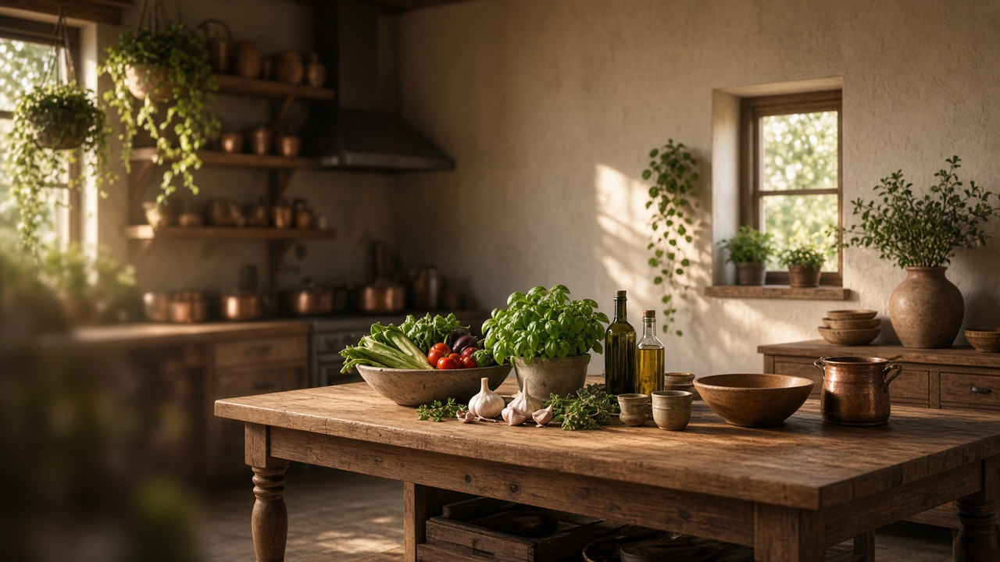
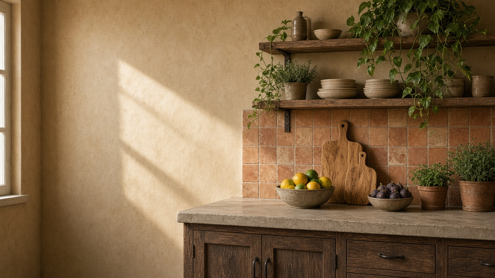
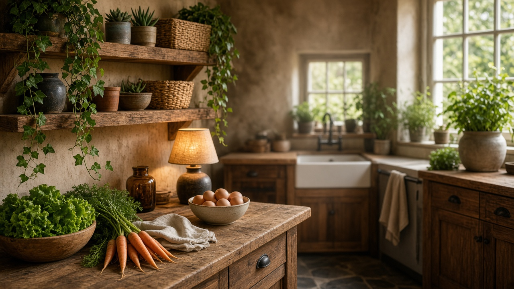
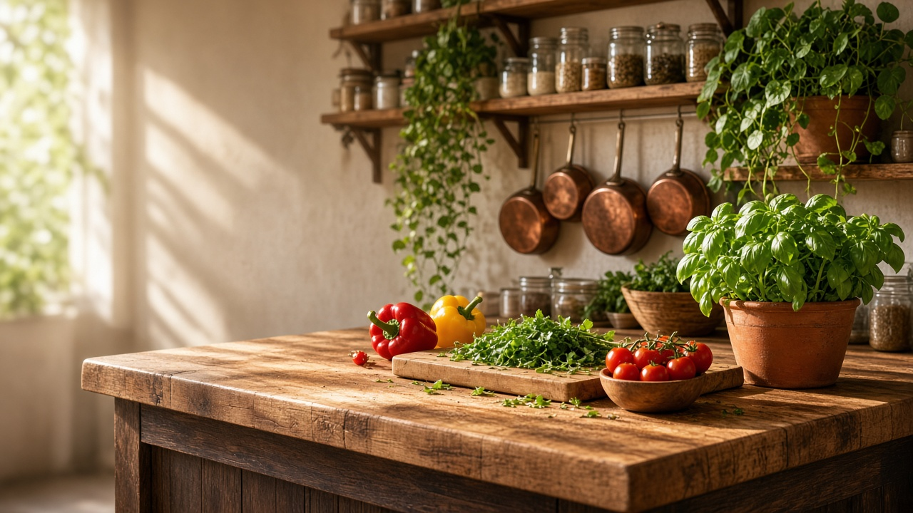

Rustic kitchen hero candidates
Not applied to the homepage yet — tell me a number (00–05) when you pick one. Best for phone-left / copy-right: 01, 03, 05.

00 — Existing illustrative kitchenWarm sketch style; plants + produce; different medium than photo

01 — Rustic produce & plantsRecommended — open left wall for phone overlay

02 — Farmhouse window greeneryBusy island; quieter right wall for copy

03 — Mediterranean herbs & citrusRecommended — soft left light for phone overlay

04 — Cottage ivy & produceMost character; busiest — may need stronger overlay

05 — Butcher block, basil & sunRecommended — soft sunlit left space